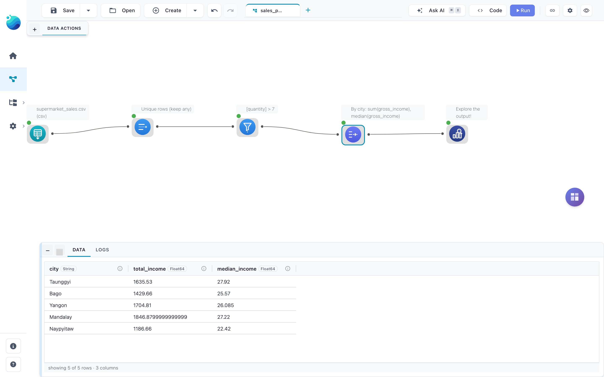
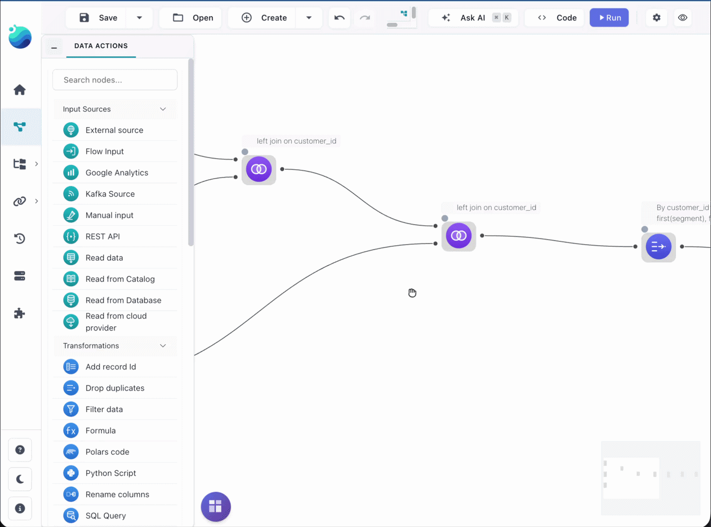
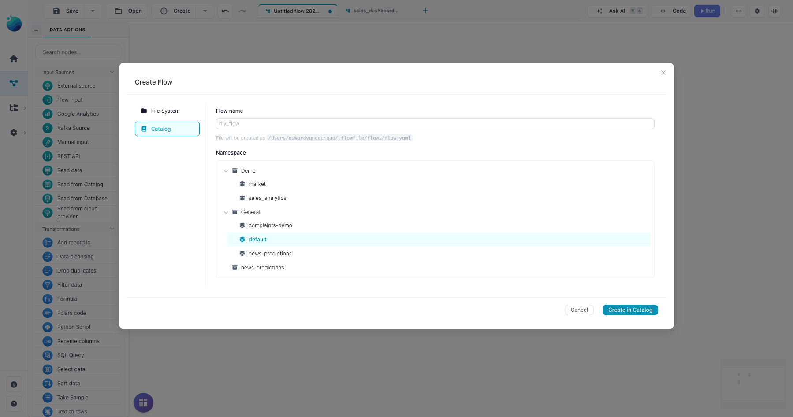
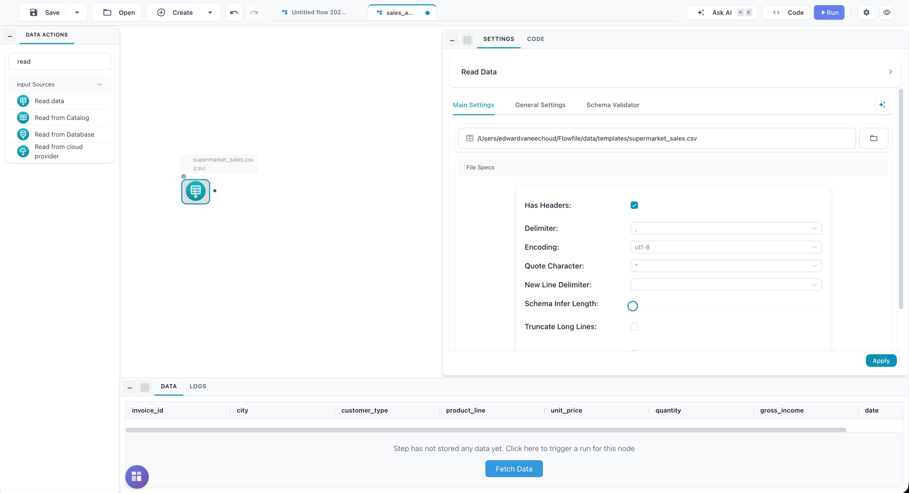
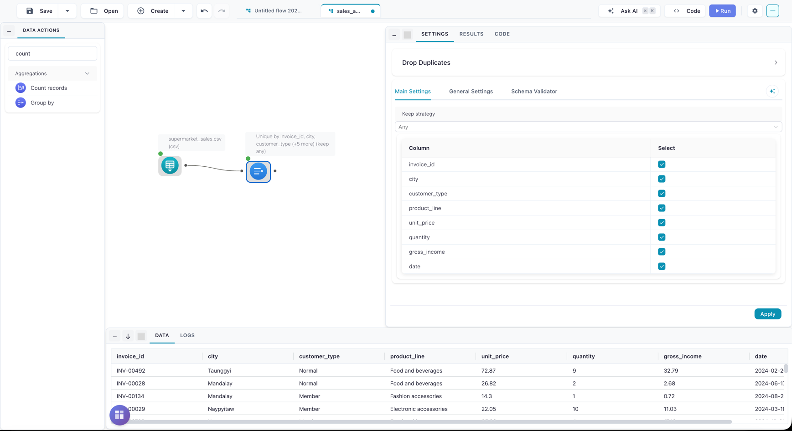
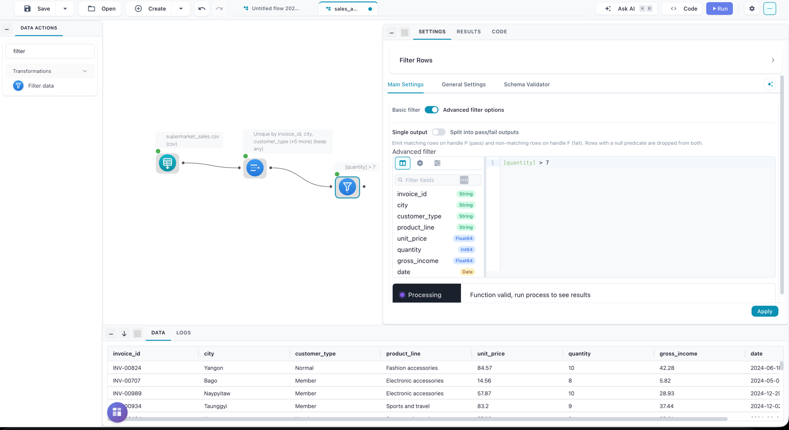
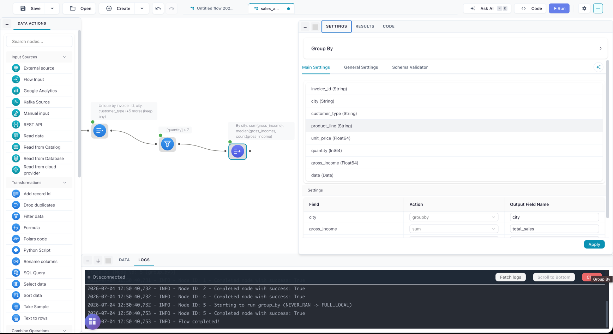
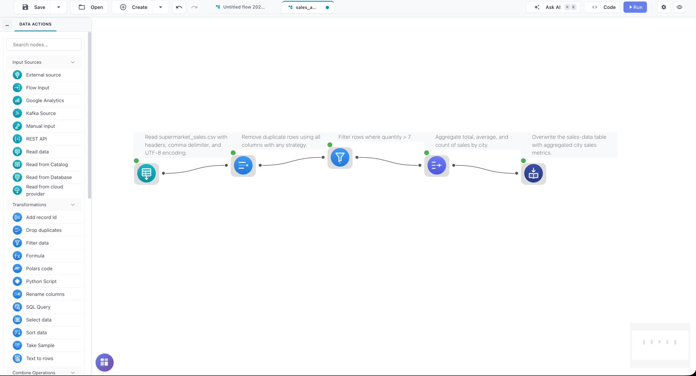
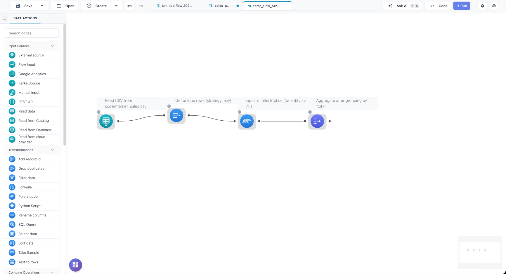

Quickstart
Install Flowfile, build a real pipeline on the canvas, and see the same pipeline as Python code — in about ten minutes. The example cleans a sales dataset: remove duplicate rows, keep bulk orders, and summarize income per city. Everything on this page is backed by files in the repository and validated by the test suite, so what you see is what will run.
Install
The fast path — the Python package brings the visual editor, the Python API, and all services:
pip install flowfile
flowfile run ui
Your browser opens the Flowfile designer. If it doesn't, go to http://127.0.0.1:63578/ui#/main/designer manually. Every other way in — desktop app, Docker, browser-only, from source — is on the Installation page.
Choose your path
Both tracks build the same pipeline — pick the one that matches how you work, or do both:
Your first flow, visually
You'll build this pipeline: read → drop duplicates → filter → group by.

Skip the typing
The finished flow ships with Flowfile: Create → From template → "Sales pipeline: clean, filter, aggregate". The sample data is provisioned automatically. You can also download the flow as a .yaml file. The steps below build the same thing by hand.
1. Create a flow
- Run
flowfile run uiand click Create in the toolbar. - Name the flow (for example
sales_analysis) and create it. - Open Settings (top right) and set the execution options for step-by-step previews (see the note below).
See your data at every step
To get a data preview under every node as you build this demo, match these flow settings:
- Execution Mode: Development
- Execution location: Local
- Show details during execution: on

See it: the empty flow

2. Read the data
The walkthrough uses a committed sample: supermarket_sales.csv — 1,030 sales rows with city, quantity, and gross_income columns (and 30 deliberately duplicated rows to clean up). Any CSV or Excel file of your own works too.
- Drag Read data from the Input section onto the canvas.
- Click the node, then Browse to your file.
- Click Run (top toolbar), then click the node to preview the rows in the bottom panel.
See it: the data preview after reading

3. Drop duplicates
- Drag Drop duplicates from the Transform section and connect Read data to it.
- Select all columns to compare whole rows.
- Run — the sample data goes from 1,030 rows to 1,000.
See it: after deduplication

4. Filter to bulk orders
- Drag Filter data onto the canvas and connect it.
-
Switch the filter to advanced mode and enter the formula:
[quantity] > 7 -
Run — 314 rows remain. The
[column]syntax is Flowfile's formula language, which follows spreadsheet-formula conventions.
See it: after the filter

5. Group by city
- Drag Group by from the Aggregate section and connect it.
- Configure: group on
city; aggregategross_incometwice — Sum namedtotal_income, Median namedmedian_income. - Run, and click the node — the preview shows one row per city with its total and median income.
See it: the grouped result and the complete flow


Save the flow (File → Save) — flows are plain .yaml files you can version, share, and run headlessly with flowfile run flow <path>.
6. Put the result to work
Instead of exporting a file, publish the result into Flowfile's catalog and analyze it there:
- Drag Write to Catalog from the Output section, connect it to Group by, pick the default namespace, and name the table (for example
sales_by_city). Run once. - Open the Catalog tab: your table is there as a Delta table with schema, preview, and history.
- Query it in the SQL editor, or open it in a visualization and chart income per city.
- When the numbers should stay fresh, schedule the flow.
That loop — build, publish, analyze, schedule — is the core of working in Flowfile. A Write data node exports to Excel/CSV/Parquet instead whenever a file is what you need.
The same pipeline in Python
The flowfile package exposes a Polars-style API that builds the identical flow:
import flowfile as ff
SALES = "https://raw.githubusercontent.com/edwardvaneechoud/flowfile/main/data/templates/supermarket_sales.csv"
result = (
ff.read_csv(SALES)
.unique()
.filter(ff.col("quantity") > 7)
.group_by("city")
.agg(
ff.col("gross_income").sum().alias("total_income"),
ff.col("gross_income").median().alias("median_income"),
)
)
result.collect() returns the same five-city table as step 5. Nothing executes until .collect() — every method call just adds a node to a flow graph, which means you can also look at it on the canvas:
ff.open_graph_in_editor(result.flow_graph)
See it: the code-built pipeline on the canvas

This snippet is included from a repository file that runs in CI on every change — it cannot drift from the real API. To go deeper — expressions, joins, databases, cloud storage — continue with the Python API quickstart.
Troubleshooting
Port 63578 is already in use
The web UI is fixed to port 63578 — it cannot be moved to another port. Free it instead:
lsof -i :63578 # macOS/Linux
netstat -ano | findstr :63578 # Windows
Stop the process holding it (often a previous Flowfile session), then run flowfile run ui again.
pip install fails
pip install --upgrade pip
pip install flowfile
Flowfile supports Python 3.10–3.13. Check python --version if the resolver complains.
For anything else: GitHub Discussions for questions, Issues for bugs.
Where next
Pick the route written for your situation:
- Coming from Excel — VLOOKUP, pivot tables, and IF-formulas translated to flows.
- Build flows visually — from first flow to a reusable toolkit.
- Analyze your data — from question to a chart that refreshes itself.
- Your data lives elsewhere — warehouse, S3, Kafka, APIs.
- Write Python — the Polars-style API, connectors, and CI.
- Extend the palette — need an operation Flowfile doesn't have? Build your own node in the Node Designer, no code file required.
- Run Flowfile for a team — the operator's route.